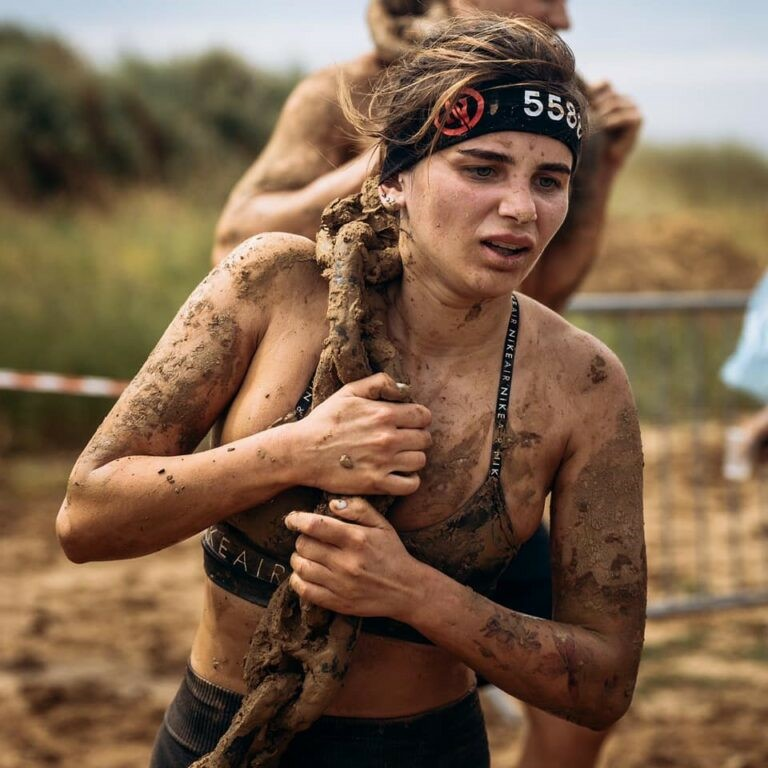

ГОНКА НАЦІЇ - це перший наймасштабніший та унікальний всеукраїнський проект OCR (obstacle racing – англійською «біг з перешкодами»). За п’ять років команді Гонки Нації вдалося сформувати та популяризувати рух в Україні та за її межами.
Гонки Нації проводяться у Києві, Харкові, Дніпрі, Одесі, Львові, ГК Буковелі тощо. Рівень проведення Заходів дозволяє бути лідерами у нашій ніші в Україні та допомагає спортсменам гідно представляти свою країну на міжнародних стартах. Гонки Нації є відбірковими етапами до Чемпіонатів Світу та Європи з OCR.
З 2014 року:
- організовано 67 заходів;
- проведено 420 тренувань;
- спроектовано 230 перешкод;
- взяло участь понад 47 тисяч учасників!
Гонка Нації — це спеціально спроектована траса із перешкодами, завдяки якій спортсмени та любителі випробовують себе на міцність та силу духу, а також витривалість та фізичну підготовку. Перешкоди пов’язані з підйомами та спусками, водою, болотом, піском, холодом, висотою, рівновагою, переміщенням предметів, вогнем та фізичними навантаженнями тощо.
Команда Гонки Нації не боїться втілювати у життя найсміливіші та екстраординарні ідеї. Проекти мають десятки тисяч прихильників по всій країні та за її межами, а кожен новий продукт — це результат довгої та копіткої праці!
Наші програми розширюють можливості та підтримують учасників на будь -якому етапі.
Розроблені, щоб запалити пристрасть і підтримувати розвиток.